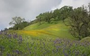
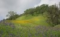
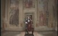
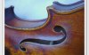
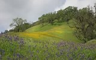

İzlesene.com
VİDEO ARA
-1
Video Yükle
Giriş Yap
Üye Ol
ÜYELİK GİRİŞİ
Facebook ile Bağlan
YA DA
Kullanıcı adınız veya şifreniz hatalı.
Şifremi Unuttum
YENİ
Üye Ol
Anasayfa
Müzik
Komik
Dizi
Spor
Sinema
Oyun
Çizgi Film
Kanallar
Videolar
İzlesene
>
Müzik
> Klasik Müzik
KLASİK MÜZİK
TÜM MÜZİK VİDEOLARI
SANATÇILAR
KATEGORİLER
YABANCI ROCK
ELEKTRONİK
R&B
CAZ
ENSTRÜMANTAL
ŞİİR
ORYANTAL
YERLİ DJ
KLASİK MÜZİK
TÜM KATEGORİLER
ARABESK
TÜRKÇE POP
ARABESK RAP
TÜRK HALK MÜZİĞİ
YABANCI POP
TÜRK SANAT MÜZİĞİ
TÜRKÇE RAP
TÜRKÇE ROCK
Cello Suite No.1 I-Prelude
Bach
Symphony Nº40
Mozart
Hallelujah Chorus
George Frideric Handel
For Baby Does Relax And Makes My Baby Sleep Like An Angel
Mozart
Concert N:1
Joseph Haydn
Mandolin
Antonio Vivaldi
Rondo Alla Turca
Mozart
Palladio
Antonio Vivaldi

Double Violin
Bach
Violin Romance
Beethoven
POPÜLER LİSTELER
3 VİDEO
HEPSİNİ ÇAL
George Frideric Handel
17 VİDEO
HEPSİNİ ÇAL
Bach
32 VİDEO
HEPSİNİ ÇAL
Mozart
21 VİDEO
HEPSİNİ ÇAL
Antonio Vivaldi
7 VİDEO
HEPSİNİ ÇAL
Beethoven
7 VİDEO
HEPSİNİ ÇAL
Pyotr Ilyich Tchaikovsky
3 VİDEO
HEPSİNİ ÇAL
Igor Stravinsky
3 VİDEO
HEPSİNİ ÇAL
Joseph Haydn
6 VİDEO
HEPSİNİ ÇAL
Franz Schubert
6 VİDEO
HEPSİNİ ÇAL
Johannes Brahms
POPÜLER ŞARKILAR
04:28
Hallelujah Chorus
George Frideric Handel
3.026 izlenme

07:20
Double Violin
Bach
5.624 izlenme
07:29
Symphony Nº40
Mozart
23.804 izlenme
02:13
Concerto For Violin No.4 In F Minor, Op.8
Antonio Vivaldi
5.834 izlenme
35:42
For Baby Does Relax And Makes My Baby Sleep Like An Angel
Mozart
15.504 izlenme
03:25
Bad Kissingen 29.06.
Bach
1.529 izlenme

02:37
Cello Suite No.1 I-Prelude
Bach
1.193 izlenme
04:00
Rondo Alla Turca
Mozart
11.638 izlenme
41:53
The Four Seasons
Antonio Vivaldi
35.177 izlenme

07:56
Violin Romance
Beethoven
3.997 izlenme
EN YENİ ŞARKILAR
27:27
Symphony İn C Major
Igor Stravinsky
76 izlenme
04:28
Hallelujah Chorus
George Frideric Handel
3.026 izlenme

07:20
Double Violin
Bach
5.624 izlenme
03:43
Battle With The Bottle
Bach
617 izlenme
01:26
Bourree From Lute Suite BWV 996
Bach
816 izlenme
03:50
Harmony
Bach
768 izlenme
01:22
Badinerie By James Galway
Bach
200 izlenme
02:38
Cello Suite No.1 Prelude In G - Major
Bach
389 izlenme
03:32
Little Prelude In C Minor BWV 934
Bach
313 izlenme
02:52
Fugue G-Major BWV 577
Bach
369 izlenme
POPÜLER SANATÇILAR
George Frideric Handel
Bach
Mozart
Antonio Vivaldi
Beethoven
Pyotr Ilyich Tchaikovsky
Igor Stravinsky
Joseph Haydn
Franz Schubert
Johannes Brahms
X


 02:13
02:13